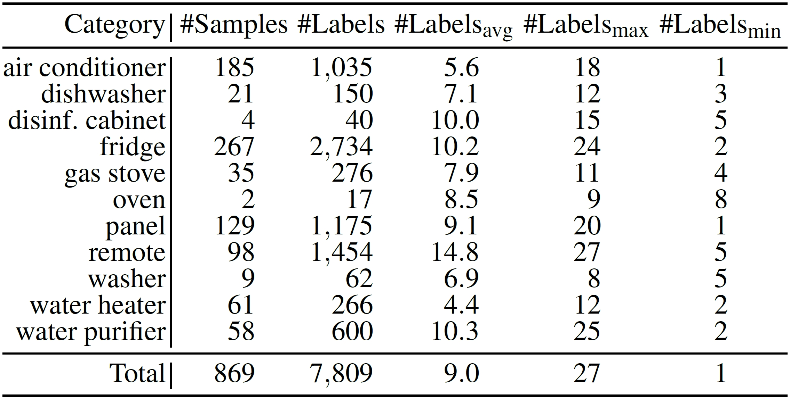

SWU-AMIL Dataset
Southwest University
[Download]
The Appliance Manual Illustration Labels (AMIL) dataset contains high-quality label layouts of illustrations from household appliance manuals. For each illustration, useful label placement information is extracted, including appliance category, label texts, label boxes, anchors, and leader lines. The AMIL dataset contains 869 label layouts across 11 appliance categories, including "air conditioner", "dishwasher", "disinfection cabinet", "fridge", "gas stove", "oven", "panel", "remote", "washer", "water heater", and "water purifier". These layouts are split into 695 / 174 samples for training and testing, respectively. On average, each sample contains 9.0 labels, ranging from 1 to 27. In addition, the dataset offers a relatively balanced distribution between samples with fewer than 10 labels (529 samples) and those with 10 or more (340 samples), with a ratio of 1.56:1. Typically, each label is associated with an anchor, but multiple instances of an element each have their own anchor. In the AMIL dataset, 605 samples feature labels each with a single anchor, while the remaining 264 samples include at least one label with multiple anchors, resulting in a ratio of 2.29:1.
An illustration with its annotations

Data statistics of the AMIL dataset
Reference
@article{qu2024graph,
|